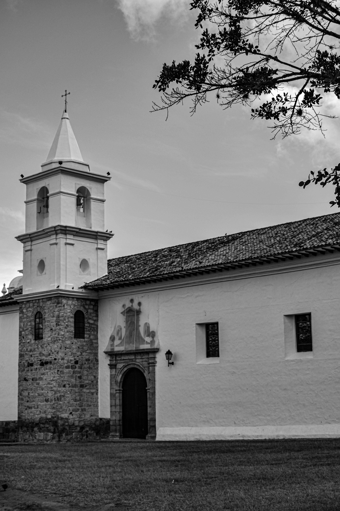

San Agustin
inicio
Popayán
Isla Gorgona
silvia

- Los visitantes pueden apreciar allí la imagen de Nuestra Señora de los Dolores y el Señor del Perdón, una escultura arrodillada sobre un globo terráqueo, enchapada en plata.
- En este lugar se encuentra la famosa custodia en forma de águila bicéfala, adornada con esmeraldas y fabricada en 1673.
- Fue reconstruido a partir de aportes de personas notables de la ciudad.